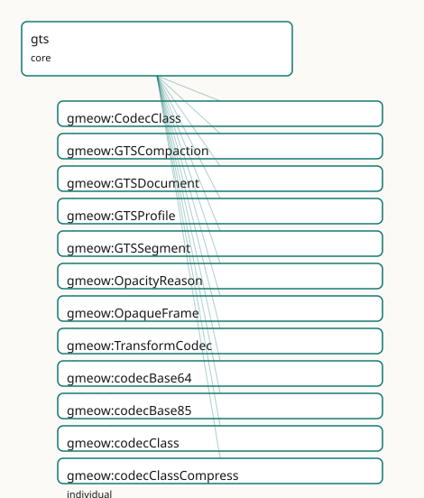

GMEOW GTS Transport Module
- IRI: https://blackcatinformatics.ca/gmeow/slices/gts
- Tier: core
Group: core
What This Slice Covers
This slice owns 38 terms and contributes 3 mapping or projection rows. Use it when its terms match the native fact you want to preserve; use the linkage tables to see how those facts leave GMEOW for consumer vocabularies.
Dependencies
gmeow:slices/attestationgmeow:slices/creative-worksgmeow:slices/kernelgmeow:slices/provenancegmeow:slices/versions
Consumers
- Describing and dogfooding GTS transport artifacts: packages, segments, profiles, chain heads, opaque frames, codecs, and compaction lineage (
docs/GTS-SPEC.md).
Local Map

Examples
Dist Package
- Source:
slices/core/gts/examples/dist-package.ttl - GMEOW terms:
gmeow:Agent,gmeow:Expression,gmeow:GTSDocument,gmeow:GTSSegment,gmeow:OpaqueFrame,gmeow:Work,gmeow:codecZstd,gmeow:contentDigest,gmeow:embodies,gmeow:gtsHeadId - External prefixes:
xsd
# SPDX-FileCopyrightText: 2026 Blackcat Informatics® Inc. <paudley@blackcatinformatics.ca>
# SPDX-License-Identifier: CC-BY-4.0
# Worked example : a two-segment GTS distribution package described
# in GMEOW's own transport vocabulary — the dogfood loop closed. Validates
# in `make validate` against the merged ontology + SHACL (the segment
# shapes demand the composite-identity parts: head, index, profile).
@prefix gmeow: <https://blackcatinformatics.ca/gmeow/> .
@prefix ex: <https://blackcatinformatics.ca/gmeow/examples/> .
@prefix rdfs: <http://www.w3.org/2000/01/rdf-schema#> .
@prefix xsd: <http://www.w3.org/2001/XMLSchema#> .
# The full WEMI spine the shapes demand: Work ← realizes ← Expression
# ← embodies ← Manifestation (the GTS document and its segments).
ex:gmeow-ontology-work-001
a gmeow:Work ;
rdfs:label "the GMEOW ontology"@en .
ex:gmeow-ontology-expression-001
a gmeow:Expression ;
rdfs:label "the GMEOW ontology, v0.1.0 statement-complete expression"@en ;
gmeow:realizes ex:gmeow-ontology-work-001 ;
# P11: an expression's content lives in a reference system — here the
# (English-labelled) vocabulary expression of the ontology.
gmeow:hasReferenceFrame gmeow:referenceFrameEnglish .
ex:gts-dist-package-001
a gmeow:GTSDocument ;
rdfs:label "gmeow.gts — the dist snapshot, with a music extension appended"@en ;
gmeow:embodies ex:gmeow-ontology-expression-001 ;
gmeow:contentDigest "blake3:0e2f4b8a3c1d5e7f9a0b2c4d6e8f0a1b2c3d4e5f6a7b8c9d0e1f2a3b4c5d6e7f" .
ex:gts-dist-segment-core
a gmeow:GTSSegment ;
rdfs:label "core dist segment"@en ;
gmeow:gtsSegmentOf ex:gts-dist-package-001 ;
gmeow:embodies ex:gmeow-ontology-expression-001 ;
gmeow:gtsSegmentIndex "0"^^xsd:nonNegativeInteger ;
gmeow:gtsHeadId "blake3:929d046b2300eb09424f2d46b07fb793ad97ddde5e9fdb25ebefe245e8da8be8" ;
gmeow:gtsProfile gmeow:gtsProfileDist ;
gmeow:usesTransformCodec gmeow:codecZstd .
ex:gts-dist-segment-music
a gmeow:GTSSegment ;
rdfs:label "appended music-extension segment"@en ;
gmeow:gtsSegmentOf ex:gts-dist-package-001 ;
gmeow:embodies ex:gmeow-ontology-expression-001 ;
gmeow:gtsSegmentIndex "1"^^xsd:nonNegativeInteger ;
gmeow:gtsHeadId "blake3:167704cc2c533090b63ff3bf38b4fcff2bb70b33f996aa22f53025044e310ee8" ;
gmeow:gtsProfile gmeow:gtsProfileGeneric ;
gmeow:usesTransformCodec gmeow:codecZstd .
# A sealed frame: opacity is vantage-relative — transparent to its recipient.
ex:gts-opaque-frame-001
a gmeow:OpaqueFrame ;
rdfs:label "sealed evidence attachment"@en ;
gmeow:opaqueFrameIn ex:gts-dist-segment-core ;
gmeow:opacityReason gmeow:opacityMissingKey ;
gmeow:sealedRecipient ex:agent-archivist-001 .
ex:agent-archivist-001
a gmeow:Agent ;
rdfs:label "the archivist"@en .
Terms
Classes
| Term | Label | Definition |
|---|---|---|
gmeow:CodecClass |
Codec Class | The capability class of a transform codec — encode, compress, or encrypt (spec §8). Determines the degradation path when the capability is missing: unknown-cod... |
gmeow:GTSCompaction |
GTS Compaction | An activity that rewrites a GTS document's frame layout — e.g. into delivery order for streaming (spec §3.2) or into a snapshot. Compaction re-authors on... |
gmeow:GTSDocument |
GTS Document | A single-file Graph Transport Substrate artifact (docs/GTS-SPEC.md): a CBOR Sequence of one or more append-only segments carrying an RDF 1.2 graph and any cont... |
gmeow:GTSProfile |
GTS Profile | A named GTS profile (spec §13) — a purpose and requirement set a segment declares. An OPEN value vocabulary (individuals, never subclasses): extensions add the... |
gmeow:GTSSegment |
GTS Segment | One complete header-plus-frames log inside a GTS document — the unit of independent integrity (spec §3.1): a segment has its own genesis hash, its own id/prev... |
gmeow:OpacityReason |
Opacity Reason | Why a frame is opaque to a given reader (spec §7.6) — a missing capability or damage. An open value vocabulary; opacity is vantage-relative, so the reason is a... |
gmeow:OpaqueFrame |
Opaque Frame | A sealed or undecodable region of a GTS segment, surfaced by the reader as a first-class object rather than dropped (spec §7.6): an encrypted frame the reader... |
gmeow:TransformCodec |
Transform Codec | A payload transform from the durable GTS catalog (spec §8): a named, stackable codec separating structure durability (CBOR + the spec, forever) from density an... |
Properties
| Term | Label | Definition |
|---|---|---|
gmeow:codecClass |
codec class | The capability class of a transform codec (spec §8): what a reader must hold to reverse it — a library (encode, compress) or a key (encrypt). |
gmeow:gtsHeadId |
GTS head id | The chain head of a segment — the content-id of its last frame, written 'blake3: |
gmeow:gtsProfile |
GTS profile | The declared profile of a segment (spec §13) — a value vocabulary individual naming the segment's purpose and requirement set. Functional per segment; a multi-... |
gmeow:gtsSegment |
GTS segment | A segment of this GTS document — the inverse of gmeow:gtsSegmentOf. Non-functional: a document holds one or more segments, ordered by gmeow:gtsSegmentIndex. |
gmeow:gtsSegmentIndex |
GTS segment index | The zero-based position of a segment within its document's file order. The ordered list of segment heads — gmeow:gtsHeadId taken in gmeow:gtsSegmentIndex order... |
gmeow:gtsSegmentOf |
GTS segment of | The GTS document a segment is part of. Functional: a segment instance belongs to one document (the same bytes appearing in another file are a different segment... |
gmeow:opacityReason |
opacity reason | Why a frame is opaque to the describing reader (spec §7.6): an encrypt-class codec without a key, a codec the reader lacks, or damage. Functional and REQUIRED... |
gmeow:opaqueFrameIn |
opaque frame in | The GTS segment an opaque frame belongs to. Functional: a frame occupies one position in one segment's chain. |
gmeow:sealedRecipient |
sealed recipient | An agent for whom a sealed (encrypted) opaque frame is decryptable — the frame's declared audience (spec §9.3 recipients). Non-functional: a frame may be seale... |
gmeow:usesTransformCodec |
uses transform codec | A transform codec declared in a segment's catalog and used by at least one of its frames (spec §8). Non-functional: payloads carry stackable codec chains. |
Individuals
| Term | Label | Definition |
|---|---|---|
gmeow:codecBase64 |
base64 codec | RFC 4648 base64 re-encoding, for payloads that must transit text-only channels. |
gmeow:codecBase85 |
base85 codec | base85 (Ascii85/Z85-family) re-encoding — denser than base64 for text-only channels. |
gmeow:codecClassCompress |
compress | A lossless compression transform (gzip, zstd, lzma2): reversal needs only a library. |
gmeow:codecClassEncode |
encode | A reversible re-encoding (identity, base64, base85): reversal needs only a library; no information is hidden or removed. |
gmeow:codecClassEncrypt |
encrypt | A confidentiality transform (COSE encryption): reversal needs a key; without one the frame degrades to missing-key opacity for that reader. |
gmeow:codecCoseEncrypt0 |
COSE Encrypt0 codec | RFC 9052 COSE_Encrypt0 sealing: the payload is encrypted to declared recipients; readers without a key see a missing-key opaque frame. |
gmeow:codecGzip |
gzip codec | RFC 1952 gzip compression. |
gmeow:codecIdentity |
identity codec | The identity transform: payload bytes pass through unchanged. |
gmeow:codecLzma2 |
lzma2 codec | LZMA2 (xz) compression — higher ratio, slower, for archival density. |
gmeow:codecZstd |
zstd codec | RFC 8878 Zstandard compression — the GTS workhorse compressor. |
gmeow:gtsProfileAiPackage |
ai-package profile | Agent-memory package profile: grounded knowledge plus provenance and standpoints, packaged for AI-agent consumption — the GMEOW dogfood profile. |
gmeow:gtsProfileBundle |
bundle profile | Composition profile: a document whose payloads include nested, independently sealed GTS documents (matryoshka, spec §12.1). |
gmeow:gtsProfileDist |
dist profile | Distribution snapshot profile: a statement-complete, reasoned graph packaged for consumption — the shipping form of an ontology or dataset. |
gmeow:gtsProfileEvidence |
evidence profile | Evidentiary profile: every frame signed, chain of custody preserved; the package is an attestation-bearing exhibit. Compaction is contraindicated (see shapes)... |
gmeow:gtsProfileGeneric |
generic profile | The default GTS profile: no requirements beyond the baseline reader contract. |
gmeow:gtsProfileImage |
image profile | Media-carriage profile: content-addressed media blobs with graph-side descriptions and progressive (catalog-before-bytes) delivery ordering (spec §3.2). |
gmeow:gtsProfileOpaque |
opaque profile | Selective-disclosure profile: substantive payloads sealed to named recipients; the describing reader sees structure, signers, and recipients but not content. |
gmeow:opacityDamaged |
damaged | The frame failed its self-hash check or its payload would not decode — content corruption, detected and surfaced rather than dropped. |
gmeow:opacityMissingKey |
missing key | The frame is sealed with an encrypt-class codec and the reader holds no key for it; the declared recipients (gmeow:sealedRecipient) can decrypt it. |
gmeow:opacityUnknownCodec |
unknown codec | The frame's transform chain names a codec the reader has no library for. |
Linkages
- Rows: 3
- Projection profiles: -
- External vocabularies:
dcat,prov
| Source | Kind | Profile | Predicate/Relation | Target | Evidence |
|---|---|---|---|---|---|
gmeow:GTSCompaction |
equivalence | - |
skos:closeMatch | prov:Activity | gmeow-gts.sssom.tsv; gmeow:eqGts002; confidence 0.9 |
gmeow:GTSDocument |
equivalence | - |
skos:closeMatch | dcat:Distribution | gmeow-gts.sssom.tsv; gmeow:eqGts001; confidence 0.8 |
gmeow:GTSSegment |
equivalence | - |
skos:closeMatch | prov:Entity | gmeow-gts.sssom.tsv; gmeow:eqGts003; confidence 0.7 |
Guide
GTS Transport Module
GMEOW describing its own transport (docs/GTS-SPEC.md): a GTS file as a
first-class entity — its segments, profiles, chain heads, transform codecs,
opaque frames, and compaction lineage. Term-level documentation lives in
module.ttl; this note carries the doctrine.
Transport claims vs content claims
GTS gives TRANSPORT claims; GMEOW gives CONTENT claims. A frame signature
or head commitment is a gmeow:Attestation whose attestedSubject is the
gmeow:GTSSegment: it proves bytes, order, and signer key control — never the
truth of the carried statements. Content claims ("this is true, signed by
Bob") are statement-level machinery (standpoint, attestation over claims)
riding as ordinary quads — opaque cargo to the transport, and therefore
invariant under transport operations by construction.
The corollary is gmeow:GTSCompaction: a rewrite re-authors only the
ordering. Content claims survive untouched; transport claims over the source
chain become detached evidence about the source document, cited through the
compaction's wasDerivedFrom lineage and the source's gtsHeadIds.
Evidence-profile documents warn on compaction (see shapes.ttl); sealing the
source verbatim as a nested GTS blob (spec §12.1) preserves its attestation
intact.
Identity
Three identities, three properties, no overlap: gmeow:contentDigest
(sources) is byte-exact identity of a file or blob; gmeow:gtsHeadId
(⊑ gmeow:versionFingerprint) is the chain head that transitively commits to
a segment's history; the document's composite identity is the ordered list of
its segments' heads (gtsSegmentIndex order).
Reuse map (no parallel mechanisms)
| transport concept | reused machinery |
|---|---|
| frame/head signatures, signers | attestation (hasSignature, Attestation) |
| blob and file byte identity | sources (contentDigest) |
| compaction / production lineage | provenance (wasGeneratedBy, wasDerivedFrom) |
| suppress frames | kernel P10 (displayable) |
| annot-frame standpoints | standpoint (accordingTo, standpointModality) |
| media payloads | documents (MediaObject) |
Opacity is vantage-relative epistemic state (Principle 9): the same sealed
frame is transparent to its sealedRecipients.